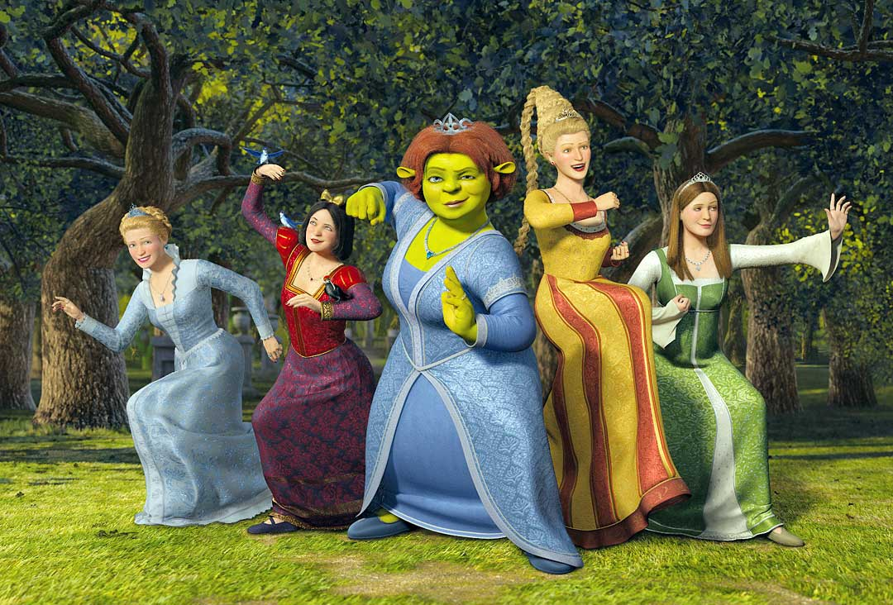

Personajes
Shrek 1

Shrek
El ogro con capas (como las cebollas) que solo quería paz y terminó siendo un héroe con un corazón gigante

Fiona
Una princesa que rompió el molde; demostró que la belleza es cuestión de actitud y que patear traseros en el bosque es muy liberador.

Burro
El amigo fiel, parlanchín y optimista que todos necesitamos (aunque a veces nos den ganas de callarlo).

Lord Farquaad
Un villano con complejos de altura y una ética bastante cuestionable que buscaba la perfección desde su torre.
Shrek 2

Gato con botas
Un espadachín seductor de mirada irresistible que se roba cada escena con su sombrero y su talento para el combate.

Rey y Reina
Los suegros de Shrek. Él escondía un secreto "saltarín" y ella demostró ser la reina de la paciencia y la sabiduría.

Hada Madrina
Una empresaria del destino con una voz increíble pero con intenciones bastante oscuras y manipuladoras.

Principe Encantador
Mucho brillo labial y pelazo, pero muy poca sustancia; el eterno "niño de mamá" que no acepta un no por respuesta.
Shrek 3

Arturo
El joven rebelde que pasó de ser el "perdedor" de la escuela a asumir la corona con valentía.

Lobo y tres cerditos
El grupo de amigos más peculiar; uno usa camisón y los otros siempre están a una soplada de perder su casa.

Dragona
La poderosa y romántica pareja de Burro que pasó de vigilar una torre a ser la fuerza aérea del equipo.

Princesas
Blancanieves, Cenicienta y la Bella Durmiente demostraron que no necesitan que nadie las rescate cuando se trata de pelear.
Shrek 4

Rumpelstiltskin
El estafador de contratos que puso el mundo de cabeza por un simple berrinche y un deseo de poder.

brogan
El líder de la resistencia ogra, rudo pero con un sentido del deber inquebrantable.

Chimichangas
El nombre de la operación de rescate (y el antojo favorito de Gato en un universo alterno) que marcó la última gran aventura.

Butter pants
El niño del "¡Haz el rugido!" que se convirtió en la pesadilla personal de Shrek en una fiesta.